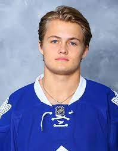

William Nylander

William Andrew Michael Junior Nylander Alteius (Nicknamed “Willy Styles”) was born on 1 May 1996 in Calgary, Alberta. He is a professional ice hockey right winger for the Toronto Maple Leafs and also plays on the first line for the Swedish National team. Nylander was selected by the Maple Leafs in the first round, eighth overall, of the 2014 NHL Entry Draft. Nylander made his senior team debut at the 2017 IIHF World Championship, where team Sweden won gold. He lead his team in scoring with 14 points in 10 games and was named tournament MVP.
Stats
| Season |
GP |
G |
A |
P |
| 2020-2021 |
41 |
14 |
20 |
34 |
| 2019-2020 |
68 |
31 |
28 |
59 |
| 2018-2019 |
54 |
7 |
20 |
27 |
| 2017-2018 |
82 |
20 |
41 |
61 |
| 2016-2017 |
81 |
22 |
39 |
61 |
| 2015-2016 |
22 |
6 |
7 |
13 |
| Career |
348 |
100 |
155 |
255 |
| Playoffs |
25 |
5 |
10 |
15 |
| World Juniors |
7 |
6 |
10 |
16 |
| World Cup |
18 |
12 |
20 |
32 |